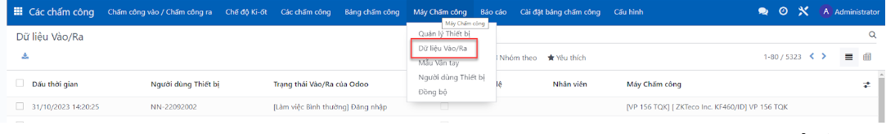

Bizapps - Xử lý dữ liệu chấm công từ thiết bị chấm công
Do thiết lập từ máy chấm công tại mục trạng thái vào/ra dẫn tới đẩy về trạng thái vào/ra dưới odoo không hợp lệ

Tính năng này sẽ tự động tính toán lại dữ liệu cho các dòng hoạt động hợp lệ = false để xử lý tạo ra dữ liệu tại menu các chấm công ngay cả khi được trả về từ máy chấm công là không hợp lệ